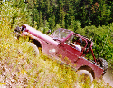

After pretzeling my tie rod twice on Iceman, I opted to take it easy the second day. I did need to drive my Jeep home the next day after all. The trail I chose was Old Miner which is rated a 3 which means it is a difficult trail for stock vehicles.
The trail starts in Spearfish Canyon and climbs 1000 feet in the first 3/4 mile up a tight switch back. We continued across several ridges and valleys through the ghost town of Carbonate and stopped to check out the Carbonate cemetery. Our trail leaders, Mike Elston in his '91 Wrangler and tail gunner Douglas Jones in his '66 CJ-5A, were familiar with much of the history of the area. Mike filled us in on the different mining techniques used in the area and the history of mining in the area.
 After Carbonate, we dropped into Chism Gulch and stopped for lunch at the base of Heckman Hill, aka Widowmaker Hill. Heckman Hill is the most challenging part of the Old Miner and it requires lots of throttle no matter what modifications you may have made to your vehicle. A couple people locked front and rear and aired down tried to crawl it, but it was too loose and steep. Our tail gunner, Doug Jones, took a short cut to avoid the hill. The tired F-Head I4 in his '66 CJ-5A lacked the horses to make the climb. Everyone made the climb after a few attempts and we dropped into Burno Gulch and back out to pavement. We finished up midafternoon and gathered at a general store for some ice cream and cold drinks. Most of us decided to continue on to Mount Moriah.
{kind=link}